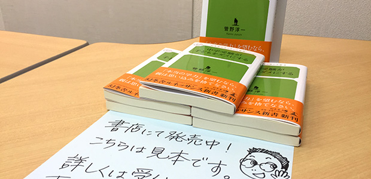
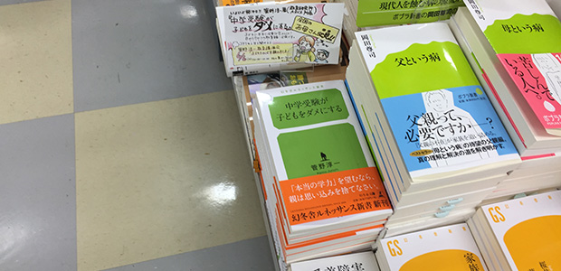
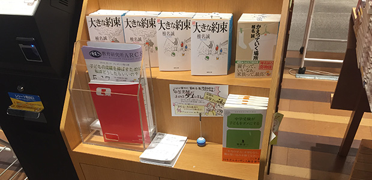

みなさんこんにちは。教育研究所ARCS事務局です。
所長管野淳一の著書「中学受験が子どもをダメにする」が好評発売中につきご紹介します！
4/8に幻冬舎ルネッサンスより発売されました。タイトルに「中学受験」と入っていますが、単に中学受験を否定するだけの内容ではなく、思春期のお子様をお持ちの方に広く読んでいただける内容となっています。当ブログでも発信している内容や講演会、セミナーを通してみなさまに伝えてきた、いわば所長管野の講師歴35年以上に渡る集大成となっています。
教育研究所ARCS近隣の柏駅周辺の書店様では追加発注のうえ平積みしていただいている書店様もあります。お近くにお住まいの方は足を運んだ際にぜひチェックしてみてください。かわいいポップが目印です！
追加発注していただいた書店様（五十音順）
・浅野書店（スカイプラザ柏専門店街）
・ウィング ブック センター（柏高島屋ステーションモール）
・新星堂カルチェ5柏店
・八重洲ブックセンター丸井柏店


現在、Amazonをはじめ楽天ブックスでもネット販売しております。きちんと読んでくださった方のレビューに感動しています！そんなAmazonレビューの一部をご紹介します。
評価：★★★★★「これが本当かもしれない」
うすうす、そうじゃないのかなと経験上思っていたことが、率直に書かれていた本でした。中学受験して、いわゆる名門中学に行っても、大部分が、自動的に幸せになれる訳ではないというのは、よく考えれば、当たり前のことなのですが、受験産業に長年いる側から聴かされると、やっぱりそうだったかと思います。様々な情報がありますが、情報に惑わされず、しっかりとした子育てをする必要性を再確認しました。また、自らの生き方を見直す良い機会になる良書だと思いました。親が子供のためを思ったようにみえて、子供をダメにしてしまうメカニズムの解説は、とてもわかりやすく、なるほどと納得できました。
評価：★★★★★「誰のために受験をするか」
子供の年齢的にそろそろ考えても良いネタだろうと、この手の本を読んでいる。
「中学受験の失敗学」を書いた瀬川松子氏もそうだが、塾講師による著書というのがポイントだった。
中学受験そのものを否定しているのではなく、要は何のために中学受験させるのかを親自身が見通しを持って理解しているか、という事なのだろう。
別の角度から考えるきっかけになった。
評価：★★★★★「目からウロコ!教育常識を覆す」
この本題に『いったいどういうことなのかしら』と疑問と興味をもちました。実は私自身も中学受験経験者の親です。
中学受験が、子どもの人生をより良くしてくれるという固定観念を見事に覆させられました。中学受験の詰め込み勉強が子どもの自主性や能力の開花の妨げになっていることが分かりやすく解説してあります。子育てに役立つノウハウや今までの教育常識を覆す内容が満載で目からウロコでした。
著者は教育現場で一万人以上の教え子を世に出し、本音で生徒とその親御さんとしっかり向き合っている様子やエピソードが熱く語られており、親としてとても参考になり好感がもてました。また、 子どもがこれからの時代を生き抜く能力を育てるには『本当の学力』を身につける過程に人生をより良く生きるためのヒントがあることに気づかされ、ハッとしました。そのためには親自身が変わり、自分自身と向き合うなど、子育てに必要な教育論が斬新かつユニークに語られている心のパートナーともいえる一冊でした。
評価：★★★★★「中学受験そのものではなく『親』への警笛」
あっという間に読み終わる良書でした。まず、書籍名となっている中学受験の罪に関してはほんのさわりでしかありません。著者が中盤より込めている『教育』『親』『人生』の本当にあるべき姿と将来像を読者に興味深く読ませるために、中学受験という比較的多くの現代の親世代が興味を持っている材料をとっかかりにしているだけに過ぎません。とにかく第五章「思い込みを捨て、みずから考える親になりましょう」は、思春期の子をもつ親や受験期を迎えた子を持つ親は必読といっても過言ではないでしょう。この章を読んで共感を抱けない親は親である感性を持ちえていないとも言えます。
世の中には起こるべくして起こったパラダイムシフトを受け入れられない頭の固い連中が少なからず存在し、そういった連中が社会の成長や改善を妨げていることに本人たちは気づいていない。科学であろうが政治であろうが、そして教育であろうがそういったパラダイムシフトにしっかり乗れること、受け入れることができる親が子供たちの未来を明るく照らせるのではないでしょうか。
評価：★★★★★「（知識詰め込み型の）中学受験が子供をダメにする」
このような理論を真正面から展開されたら、あなたはどう感じるだろうか？この本は、進学塾の講師＆主催者の菅野淳一さんが、30年以上にも及ぶ経験を新書版としてまとめたものであるが、実際にこの本を読んでみると、中学受験や、学校（特に偏差値上位校と言われる中高一貫校）に関する幻想がことごとく否定されてしまうのがはっきりと実感できる。
もちろん、著者の菅野さんは中学受験そのものを全否定しているわけではないが、現代の日本では、私立の中高一貫校や、偏差値上位大学を卒業しても、安定した職に就けるとは限らなくなっている。
その理由は、「正解は必ず1つである」という、旧来のペーパーテストの前提が時代にそぐわなくなっているからである。
つまり、幼少期や、小学生の頃から「正解は必ず1つである」問題の解法ばかりを詰め込まれた子供は、後で大変な思いをしてしまうのである。
なお、この本では著者の菅野さんが、中学受験のためのクラスを廃止した理由についても簡単に書かれていたが、実際にこの部分を読んでみると、（知識詰め込み型の）中学受験が子供たちに重大な悪影響を及ぼしていることがすぐに理解できる。
そのことを考えると、この本を読む価値は非常に高いと言える。もちろん、この本の内容は中学受験の弊害以外にも、まだまだ数多くあるが、いずれにしろ、この本には私を含めた、多くの人が抱いているような、中学受験の甘いイメージを一発で吹き飛ばす力を持っているのは明らかと言える。
だから、中学受験で「こんなはずではなかった！」という思いをしたくない人は、まずこの本を読んで欲しいと思う。
お近くの書店、もしくはAmazon、楽天ブックスでのネット販売からもご購入いただけます。中学受験をご検討の方、思春期のお子様をお持ちの方、子育てに心配、お悩みを抱えている方の手助けになれればと執筆しました。
ぜひお手にとって見てください！

既にご購入いただいた方、追加発注してくださった書店様、ポップ設置にご協力いただいている書店様にこの場を借りて御礼申し上げます。
ありがとうございます。